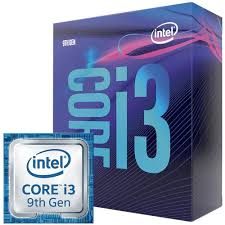
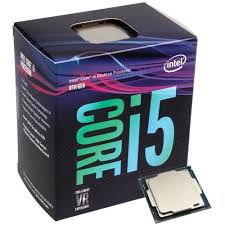
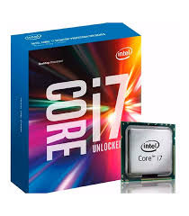

Processador Core i3
O processador Intel Core i3 é um componente de computador que pertence à linha de entrada da Intel, sendo projetado para tarefas básicas, como navegação na web, edição de documentos e visualização de mídia.
Algumas características do processador Intel Core i3 são:
Possui entre dois e quatro núcleos de processamento
Tem suporte a hiperprocessamento e virtualização
É compatível com versões 64 bits do Windows
Não suporta o turbo boost, que permite aumentar a capacidade de processamento além do preestabelecido
É conhecido por oferecer bom desempenho a um preço acessível

Pocessador Core i5
O primeiro modelo da série Core i5 a ser lançado aos usuários se deu no dia 9 de Setembro de 2009, chamado de Core i5 750. O Core i5 750 é o primeiro modelo da nova geração e apresenta uma frequência de 2.66 GHz, trabalhando com 4 núcleos(Quad Core) e possuindo um cache L3 de 8 MB. Se comparado ao seu irmão(Core i7) da mesma família, o processador Core i5 aumentou a sua capacidade, suportando agora memórias DDR3-1333. Porém em desvantagem o processador Core i5 poderá somente trabalhar em modo Dual Channel enquanto que os modelos atuais Core i7, podem trabalhar em modo Triple Channel. Outra novidade, presente na série Core i5, se da ao fato de que o novo padrão de controladoras de vídeo já estarão introduzidas no próprio processador, sendo desnecessário um meio intermediário de comunicação. Com isso a comunicação entre CPU e GPU será direto, por meio de um barramento (exemplo o barramento QPI), aumentando a performance do computador

Processador core i7
O processador i7 da Intel é um dos mais reconhecidos no mercado por entregar alto desempenho para quem precisa de um processador potente para jogos ou trabalho. A linha foi lançada em 2008 e desde então vem evoluindo e atualizando para fornecer a melhor perfomance para quem é entusiasta. Hoje, os processadores Intel estão na 11ª geração.
Saiba tudo sobre processadores nesse artigo!
Preparamos este artigo para você conhecer a história, os principais modelos e os melhores preços do i7 no Brasil, para que assim você consiga comparar qual o melhor modelo de processador para você.